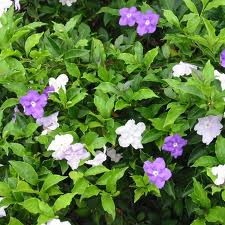

Brunfelsia

Brunfelsia (Brunfelsia de la famille des Solanacées)
Toxique par ingestion.
Partie toxique pour les chats en général et le Korat en particulier :
Toute la plante.
Symptômes du processus pathologique :
Symptômes non décrits. Merci de contacter le Korat Club de France si vous avez des informations à ce sujet : retour d'expérience avec votre Korat ou encore lecture sérieuse théorique par exemple.
Origine de la toxicité (principe actif) :
Scopoletine.